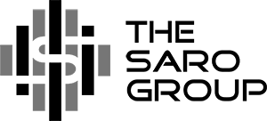

 The SARO Group Inc.
The SARO Group is focused and involved in specialized projects & consultations ranging from corporate financial development and real estate to applications in signal processing, machine learning and AI, audio and visual engineering as well as modern cryptography.
Mission: Adapting technology in profound ways is not a simple task. That is why we spend a tremendous time on research and development above all else. We uniquely examine a multitude of fields to produce work in many disciplines. Careful attention to detail and modernity are key to our work. It is important to build for the future - laying groundwork for designs that will remain strong for years to come. By looking at the entire picture - from the mathematics that power algorithms to the final user experience itself - we are able to design with confidence and determination. The results bring together diverse sectors in seamless yet powerful ways.
Case Study - Machine Learning: Machine learning is the blanket term used to describe how computational power is utilized to process and learn about data. We are interested in processing such raw data to come up with strong observations. Combining the power of statistical methods as well as a natural iterative approach allows data to be visualized in intuitive ways. Machine Learning and adaptive technologies are vital in our developments which aim to powerfully simplify the experiences of user-driven tasks and modeling that were previously out of reach.
Case Study - Cryptography: Cryptography is a vast field which today comprises of the science and methods of developing secure communication between multiple parties with the assumption that an adversary is present. We have been very focused on cryptography and consider it to be a defining part of our company. Strong security is becoming paramount in the world today, and large networks are implementing stronger protocols every day that aim to accomplish the goals of privacy in communication. With Quantum Computing and other technological hurdles, Cryptography is constantly evolving. Our work is focused on presenting inherent & decentralized anonymity on top of the strongest existing standards of encryption utilized today - however we are also constantly researching algorithms that are resistant to the standard Quantum-based attacks (such as Lattice-based methods) to build for the future. Overall, our research in cryptographic methods remains a key part of our work as well as our interest to provide transparent, open and mathematically (proven) strong security for years to come.
Case Study - Signal Processing: Signal processing is another core part of our research. Our focus is on audiovisual signals and the engineering behind audio (sound) and visual (lighting) are both part of the vast field of signal processing. The goal of signal processing in the audiovisual domain is to analyze these sources and resultant protocols to improve methods of higher fidelity and new innovations in automation. We are interested in all(!) things audio had we unlimited time, but our research is primarily focused on the mathematics behind components and protocols such as Digital-to-Analog convertors (DAC's) and the DMX protocol for fixture control (mainly lighting). By studying the engineering of audio conversion from digital sources to analog soundwaves combined with psychoacoustics (the psychological study of sound perception), we are able to utilize newer (or previously very computationally expensive) methods to improve as technology continues to advance. More and more extremely powerful source components such as FPGA are growing in the field - all the while becoming more accessible to end users with advanced modern software. Furthermore, we are interested in automation algorithms and variations of standard Fourier transform based real-time visualization of audio to lighting with the same powerful hardware that continues to grow in scope. We can additionally utilize our other research and development such as Machine Learning to further advance algorithms for automation and other tasks in signal processing.
As mentioned, our goal is to bridge diverse (and seemingly unrelated at first look) sectors in unique yet powerful ways.
The three case studies presented are a short description of our bigger picture - bringing technology together with modern standards of security, design, practice, and doing things the proper way.
Contact information is below for comments, questions - formal or casual - we're always interested in user input and feedback!
E-mail — turnaround ≤ 12 hours hello@thesarogroup.com Phone — toll free & local 855-206-SARO (7276)
Fax — monitored daily 412-365-5278 Mailing Address The SARO Group Inc.
300 Liberty Ave, Suite 1519
Pittsburgh, PA 15222-1271